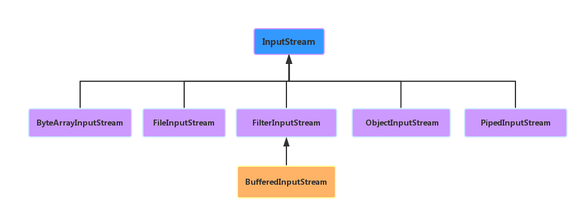

HELLO,
MY NAME IS XuJianGuo AND THIS IS MY BLOG
深入Java I/O
Java中的I/O
I/O问题是我们在编程中最为常用的，我们需要读写文件，会有磁盘IO，我们在网络上下载电影，会有网络I/O，我们通过I/O操作 获取着各种各样的信息。在现在这个大数据时代，I/O问题无疑成为了性能上的瓶颈，做好了I/O的优化，可以很好提升系统的性能。 作为一名Java程序员，有必要深入了解下Java的IO机制。
从Java的IO操作类上可分为下面几种：
- 基于字节操作的接口：InputStream和OutputStream
- 基于字符操作的接口：Writer和Reader
- 基于磁盘文件操作的接口：File
- 基于网络操作的接口：Socket
从Java的IO模型上可分为下面几种：
- 同步阻塞BIO
- 同步非阻塞NIO
- 异步非阻塞AIO
基于字节的IO接口
下面是我们常用类的继承图，最上层的是InputStream，它是一个抽象类，提供了以IO读的基本操作，从源代码看read方法，都是以 byte为单位进行文件的读取，FileInputStream/ObjectInputStream等类都是继承了InputStream，根据自己类的特点实现 不能的职能，这里使用的是装饰器模式。
OutputStream的继承图也是跟上图是一致的，跟InputStream是一种对应的关系，但是OutputStream负责的是写的操作，下面我看看 具体代码的使用：
import java.io.BufferedInputStream;
import java.io.BufferedOutputStream;
import java.io.File;
import java.io.FileInputStream;
import java.io.FileOutputStream;
import java.io.InputStream;
import java.io.OutputStream;
import org.junit.Test;
/**
* 基于字节IO的读写操作
* @author xujianguo
* @email ray_xujianguo@yeah.net
* @time 2015年8月18日
*/
public class ByteIO {
//文件地址，相对于项目路径下
private String path = "file/demo.txt";
@Test
public void read() throws Exception {
InputStream input = new BufferedInputStream(new FileInputStream(new File(path)));
byte[] content = new byte[1024];
while(input.read(content) != -1) {
System.out.println(new String(content));
}
input.close();
}
@Test
public void write() throws Exception {
OutputStream output = new BufferedOutputStream(new FileOutputStream(new File(path)));
output.write("gdut xujianguo".getBytes());
output.close();
}
}
下面我们从源码的角度上去叙说一下read方法的执行流程： 首先通过new File我们创建一个文件，这个文件是一个Java的标识类，File类里面维护了一个FileSystem类，通过path路径 可以定位到这个文件在系统的位置，可以通过这个FileSystem获取文件的各种属性。将File对象用去创建FileInputStream对象， FileInputStream通过File的路径去调用native方法open这个文件，一个通过这个open跟真是底层系统建立起了IO通信，通过read 方法可以读取一个个字节出来，将这个对象送给BufferedInputStream，BufferedInputStream最重要的作用是建立了一个默认8k缓冲 区，里面通过调用FileOutputStream的read方法去读取真实的数据出来。
为什么使用装饰器模式？ 装饰器模式的思想就是动态的给一个对象添加一些额外的职能，使其更加灵活。对于Java的IO来说，读取底层的文件都是以字节读取，但是可以 在字节的基础上构建缓冲区，就有了Buffered类型的InputStream。在整个IO包中，InputStream承担的是规范，接口，模板的功能，如读 文件有FileInputStream的实现类，BufferedInputStream可以接收InputStream类型的实例，在它的基础上加载Buffer缓冲的功能，实 现了另外一种职能。
基于字符的IO接口
核心实现： 在底层，我们都是通过基于字节的IO接口，如果要建立基于字符的IO接口，无疑也是在字节的基础上处理，通过查看InputStreamReader的源码， 可以清楚的看到，这项工作是交给了StreamDecoder是实现字节到字符的转换。
常规操作：
import java.io.FileReader;
import java.io.FileWriter;
import org.junit.Test;
/**
* 基于字符IO的读写操作
* @author xujianguo
* @email ray_xujianguo@yeah.net
* @time 2015年8月20日
*/
public class CharIO {
//文件地址，相对于项目路径下
private String path = "file/demo.txt";
@Test
public void read() throws Exception {
FileReader reader = new FileReader(path);
char[] content = new char[20];
while(reader.read(content) != -1) {
System.out.println(new String(content));
}
reader.close();
}
@Test
public void write() throws Exception {
FileWriter writer = new FileWriter(path);
writer.write("徐健国".toCharArray());
writer.close();
}
}